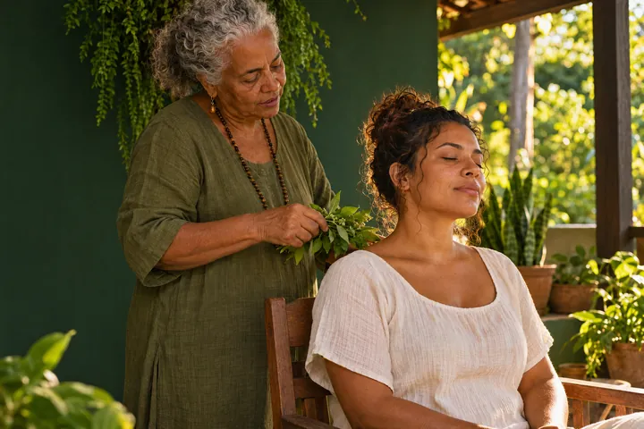
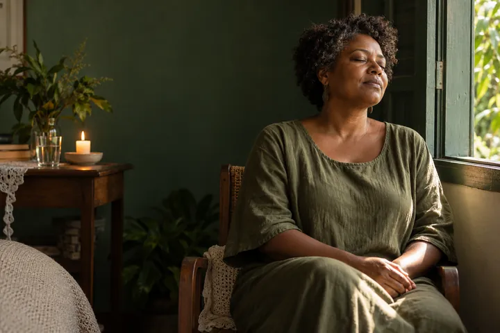
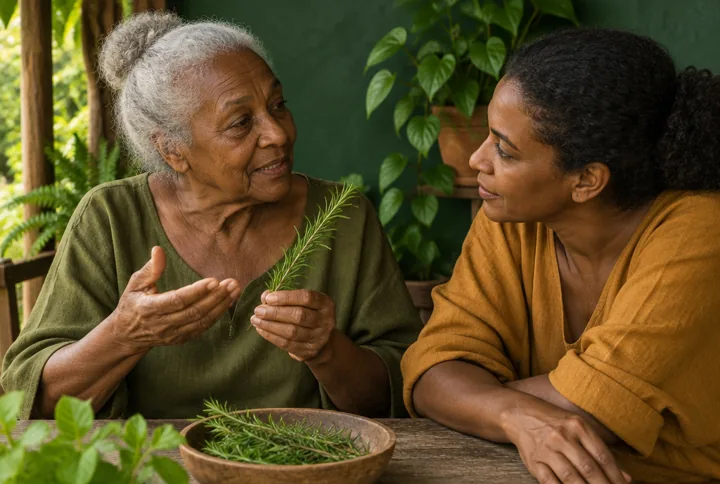
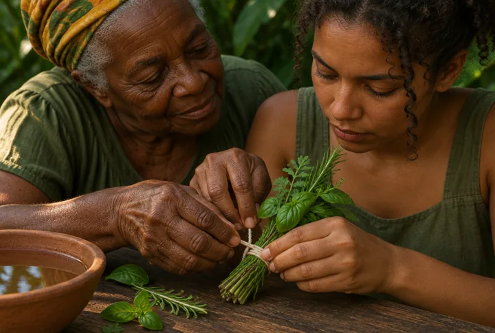
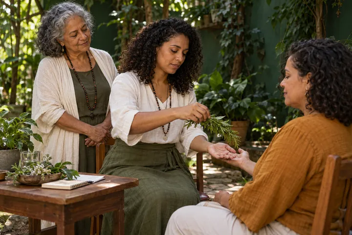
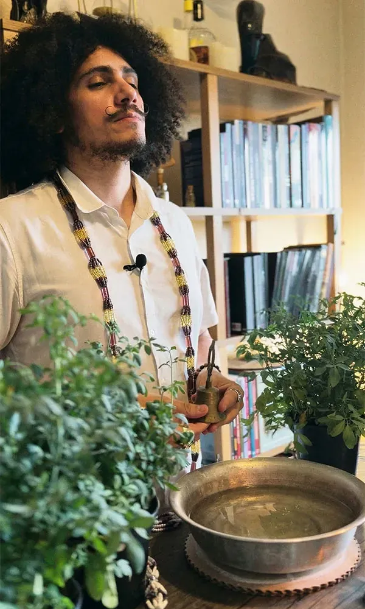
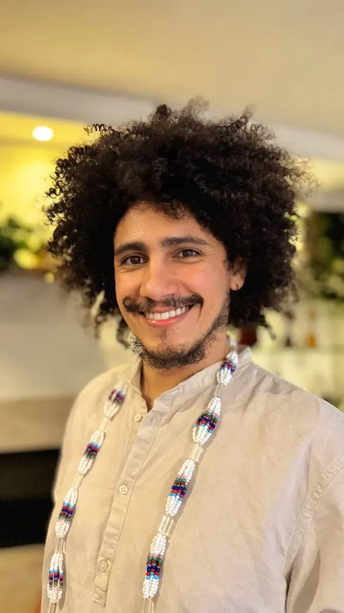
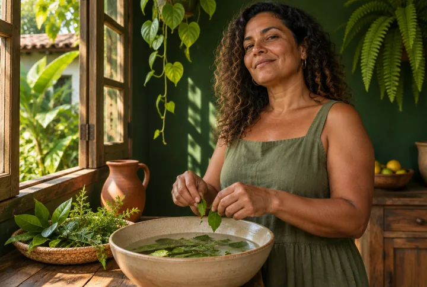
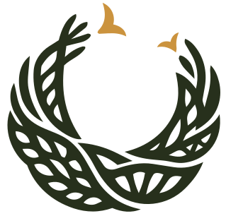

Sankofa
Voltar para buscar. Resgatar o que ficou para trás para poder seguir adiante.

Formação Saberes Ancestrais
Desenvolvimento magístico e espiritual continuado
Um caminho continuado de desenvolvimento, com encontros ao vivo toda semana, práticas energéticas, benzimento e magia com as plantas. Sem dogma, sem hierarquia, sem pedir licença a ninguém.
Você caminha no seu ritmo, pelo tempo que fizer sentido.
Você sente quando a casa está pesada. Sente quando alguém chega carregado. Às vezes acorda com algo atravessado no peito e sabe, antes de qualquer notícia, que aconteceu alguma coisa.
Só que ninguém nunca te ensinou o que fazer com isso. Então você leva para outra pessoa traduzir. Marca uma consulta e sai de lá com uma resposta sobre a sua própria vida, dita pela boca de um estranho.
Talvez você já tenha tentado pertencer a uma casa, mas em algum momento o seu questionamento começou a incomodar. Chega uma hora em que a gente não aceita mais "sempre foi assim e ponto".
Assim como uma criança perde suas roupas porque cresceu, ambientes que te eram confortáveis no passado hoje não te servem mais.
Você até tentou dar um jeitinho, relevar... afinal são anos de história. Mas não houve abertura.
Você tem muito a contribuir. Só precisa de espaço para isso.


O que te falta é gente do teu lado te apoiando neste processo.
Mediunidade é percepção. E percepção se desenvolve, como qualquer outra.
Em cada pessoa ela chega por uma porta diferente:
Na Formação, você desenvolve isso em duas etapas:
Isso se aprende praticando toda semana, ao vivo, com alguém conduzindo.
Quantas vezes você saiu de uma consulta esperando que outra pessoa traduzisse o que os seus ancestrais tinham para te falar?
Esse é o maior presente que a Formação oferece: você se tornando o canal direto da sua própria espiritualidade.
Uma escola que te deixa dependente dela não te formou. Só te manteve.
Qual é o objetivo do papel de uma Mãe ou de um Pai? Tornar-se desnecessário.
Eu ouvi eles falando: você nunca esteve só. Mesmo sabendo da minha fé. Mesmo sabendo que não queria ser uma terapeuta profissional. Eu sempre quis ser terapeuta da minha vida.

A Formação se apoia numa base conceitual com origem e fundamento. Nada aqui é tradição repetida por repetir. É conhecimento antigo, estudado com seriedade e trazido para a vida de agora.
Voltar para buscar. Resgatar o que ficou para trás para poder seguir adiante.
A força vital que se movimenta e se conduz. O Àṣẹ mora nas palavras e nas plantas.
Eu sou porque nós somos. Ninguém se desenvolve sozinho.
O ideal de caráter e conduta.
Sobre esses quatro pilares se constrói tudo o que você aprende aqui.
Ensinaram que o sagrado mora em endereço específico, e que para acessar você precisa ir até lá e falar com a pessoa certa. Isso é conveniente para quem controla o endereço.
O sagrado não tem endereço.
Ele acontece onde você estiver, com o que você aprender a conduzir.

Sentir e discernir é mediunidade. Agir sobre o que se soube é magia.
Uma sem a outra deixa a caminhada manca.
Conteúdo solto na internet não desenvolve ninguém porque entrega só o primeiro deles.
Uma fonte confiável para buscar, com fundamento e ordem.
Uma rotina para cultivar. Espiritualidade se constrói fazendo.
Gente para trocar, perguntar e praticar junto. Sem julgamento e sem hierarquia.
Quando os três estão juntos, a espiritualidade entra numa espiral que só cresce. É por isso que este caminho é continuado, e não um curso com data para acabar.
O Encontro de Desenvolvimento
Este é o coração da Formação.
É ao vivo porque desenvolvimento é treino, e treino não acontece assistindo vídeo. Você pratica junto, sente, relata e é conduzida na hora.
É onde você aprende a diferenciar o que é seu do que é do ambiente. E onde percebe que o que você achava que era imaginação tinha nome.
Se não puder estar na hora, fica gravado.

O conteúdo se abre de forma progressiva, respeitando a ordem natural do desenvolvimento.
As aulas de magia ficam disponíveis na plataforma para você assistir no horário que der.
Toda segunda-feira, às 19h30, prática conduzida ao vivo. Fica gravado para quem não puder.
Uma orientação por semana, alinhada às energias do momento. Feita para quem tem rotina cheia.
É por ele que você assiste às aulas, consulta a biblioteca e conversa com os outros alunos.
A Formação não congela. Tem gente aqui há mais de um ano e ainda com o que aprender.
Quem conduz
Sacerdote de culto aos ancestrais, cientista da religião, escritor e formador de magoterapeutas. Fundador da Escola Contém Magia, por onde já passaram mais de 44.000 alunos. Autor de Magia com Plantas, publicado pela Editora Planeta.
Antes do currículo, uma coisa sobre mim: eu venho de origem evangélica.
Sei o que é crescer dentro de uma estrutura que dá resposta pronta e não aceita pergunta. Por isso esta escola não impõe visão religiosa nenhuma.
Não vou te pedir para abandonar a sua fé, nem para adotar a minha. Aqui a gente trabalha a espiritualidade, que vem antes da religião e cabe em qualquer crença.
Tem aluno que vem de terreiro, de igreja, da bruxaria e de lugar nenhum. Todo mundo é respeitado do mesmo jeito.

Um canal na comunidade onde você escreve o que está vivendo e mais de cem pessoas enviam energia e bênçãos por você. Sem precisar merecer, explicar ou retribuir.
Sua guiança de bolso. Você conta o que está vivendo e ela indica o banho, a defumação ou o rezo exato para o seu caso.
Acervo vivo com rezos, rituais, receitas, banhos, defumações e palavras de poder, sempre à mão.
Você grava um vídeo do seu benzimento, envia na comunidade e recebe orientação específica para evoluir.
O estudo dos mitos em áudio, no estilo radionovela, com as histórias dos orixás e o que cada mito ensina.
Uma orientação por semana, alinhada às energias do momento, dizendo o que fazer para cuidar da sua energia.
Tudo o que entra de novo na escola é liberado para você antes de todo mundo, sem espera.
Plano Anual
Magia com Plantas, em capa dura, publicado pela Editora Planeta, autografado por mim.
Você preenche o endereço na matrícula. A equipe encomenda, eu autografo e mando para você.
É o único item físico da Formação. Uma caminhada que acontece toda no celular precisa de algo que se pegue na mão.
Para mim, que fugi do catecismo e depois me considerava ateia, sem crença nenhuma espiritual, e também com um super vazio interno, é uma expansão e evolução muito profunda. Decidir seguir com você nesse desenvolvimento espiritual foi a melhor decisão que tomei. Me sinto segura aqui.
Eu sinto uma amorosidade e um acolhimento sem culpa, porque eu os honro e tenho muita gratidão a eles.
Eu sou médium de incorporação, estou afastada mais ou menos um ano do terreiro. Durante esse tempo eu venho pedindo orientação, que me mostrasse alguém, um lugar onde eu pudesse me desenvolver. Ontem com a prática o que eu senti foi: Continue.
É para você que:
Não é para você que:
Valor original da Formação: R$ 2.500. Nesta oferta, os planos têm valor especial.
R$ 1.297 à vista ou 12x de R$ 130,22
R$ 393 à vista no pix ou 3x de R$ 138,91 no cartão
Os dois planos dão acesso ao mesmo conteúdo. A diferença está no compromisso: o Anual é de quem decidiu caminhar o ano inteiro, e por isso recebe o livro. O Trimestral existe para quem prefere entrar com um passo menor.
Pagamento no pix ou no cartão.
Entre, participe dos encontros, veja os materiais, converse com a comunidade, faça as práticas.
Se sentir que não é para você, fale com o suporte dentro do prazo e devolvemos o seu dinheiro. Sem justificativa e sem constrangimento.
Você é livre. Foi por isso que você chegou até aqui.

Não. A escola é ecumênica e não dogmática. Trabalhamos a espiritualidade, que vem antes da religião. Sua crença é respeitada, seja ela qual for.
Não. Aqui não existe iniciação obrigatória, obediência nem hierarquia. Você é conduzida, não comandada.
Não. A Formação existe para desenvolver desde o começo. Se você já tem experiência, aqui você aprofunda e organiza o que sabe.
Consegue. As aulas ficam gravadas, o encontro ao vivo também, e toda semana existe uma prática de sete minutos para quem tem rotina cheia.
Quase todo mundo chega achando que não sente. A maioria só nunca aprendeu a reconhecer o que já sentia. É exatamente para isso que o desenvolvimento é semanal e ao vivo.
Os módulos são liberados mês a mês ao longo de um ano, mas a Formação é continuada. Entra conteúdo novo toda semana e todo mês.
Não. A maior parte das práticas usa erva, vela, água e coisas que já existem na sua casa. Você aprende a trabalhar com o que tem.
A migração é automática. Nossa equipe cancela a sua assinatura do grupo e você passa a ter tudo dentro da Formação, incluindo o material e os encontros do grupo de benzimento.
Assim que a inscrição é confirmada, você recebe as instruções por e-mail e WhatsApp. Todo o conteúdo fica na plataforma da escola, que tem aplicativo próprio.
Carta de fechamento
Se você chegou até aqui, já entendi uma coisa sobre você: não está procurando alguém para te dizer o que fazer. Se estivesse, teria parado na primeira casa que te deu uma resposta pronta.
Você procura um lugar onde possa aprender de verdade, perguntar sem medo e ser você mesma enquanto faz isso.
Preciso te dizer com honestidade: eu não tenho poder nenhum sobre a sua espiritualidade. Ninguém tem. Nem pai de santo, nem pastor, nem eu.
O que eu tenho é conhecimento, método e um grupo de gente séria caminhando junto. Isso eu ofereço de coração aberto.
O resto sempre foi seu. Os seus ancestrais já estão falando com você. Eles nunca pararam. Você só nunca teve quem te ensinasse a ouvir e a responder.
É isso que a gente vai fazer aqui.
E no dia em que você não precisar mais de mim, vou saber que fiz o meu trabalho direito. Porque esse sempre foi o objetivo.
Um caminho de volta pra casa, com os pés na terra, o coração nos tambores e a alma na orientação dos guias.
Te espero na segunda-feira.

Edu ParmeggianiP.S. Você tem quinze dias de garantia. Entra, participa, faz as práticas. Se sentir que não é o seu lugar, a gente devolve o seu dinheiro sem perguntar nada. Você é livre. Sempre foi.